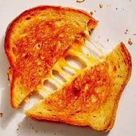

Grilled Cheese

Description
A grilled cheese recipe involves toasting slices of bread with melted cheese in a
pan or on a griddle until the bread is golden and crispy, and the cheese is gooeyand melted. It's
a simple and satisfying comfort food that can be enjoyed on its own or paired with tomato soup or a side salad.
ingredients
- Sliced bread (white, whole wheat, or your preferred type)
- Cheese (common choices include cheddar, American, Swiss, or mozzarella)
- Butter or margarine (for spreading on the bread)
Steps:
- Preheat the Pan or Griddle
- Butter the Bread
- Assemble the Sandwich
- Grill the Sandwich